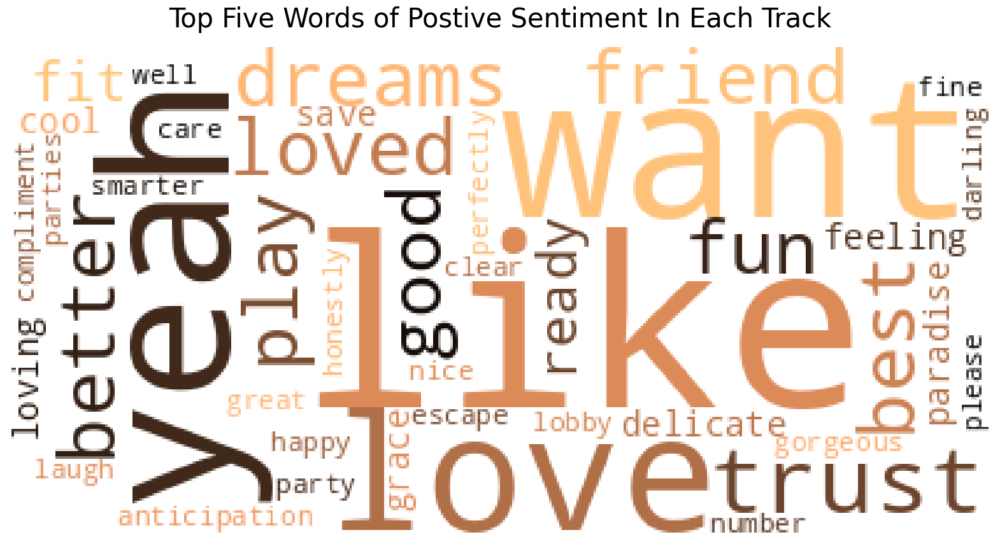

import pandas as pd
import reRick Liu
August 4, 2023
Modified: August 4, 2023
:max_bytes(150000):strip_icc():focal(992x0:994x2)/taylor-swift7-2000-48f9bfb372c34e36866773b1ede0b372.jpg)
Introduction
Taylor Swift has long been known for her catchy choruses, motivational lyrics, and upbeat music. Her fans can often feel quite deep emotional connections to the lyrics of her songs as she easily creates relatable themes of basic rom-com plot, demonstrates the feeling of being “different”, or even create a sense of “slay” energy. As such, while it is commonly known by Swifties that the lyrics of songs are powerful in emotion and meaning, it begs questions if the track order of her albums also convey a story-like narrative. Previous investigation of Taylor Swift’s work has clearly seen shifting narrative formula as Reputation identifies as hip hop while folkmore leans more on the country music elements yet studies within these albums have not been examined in depth (Fogarty and Arnold 2021). With this interest in mind, I hope to explore the question of whether Taylor Swift crafts some semblance of an overarching narrative with her tracks in the Reputation album.
Questions
Album Story
- Is there an existence of a narrative within the lyrics? How does it relate to the Reputation album journey taken by Taylor Swift’s listeners?
Natural Language Processing (NLP)
- Which words are most frequently used by Taylor Swift in each of her Reputation tracks? What is their significance in the story told by Taylor Swift?
Sentiment Analysis
- What is the overall sentiment of each song in Taylor Swift’s Reputation album, and what is its relationship to the narrative of the album itself?
Data & Analytical Process
Description of Data
To explore the lyrics of each song in the Reputation album, I used the Taylor Swift Song Lyrics dataset containing all the lyrics of her albums on Kaggle. Particularly, I used the “06-reputation.csv” file to access the lyrics of each line in each song in the album. The dataset itself has five columns of data which are defined by the main contributor of the dataset.
| Column | Description |
|---|---|
| ‘album_name’ | Name of the album |
| ‘track_title’ | Name of the song |
| ‘track_n’ | Track number |
| ‘lyric’ | Lyric at each line |
| ‘line’ | Line number per song |
Given that the data is based on the definite lyrics of each song and do not include any singles/special releases of songs, there should not be any apparent populations or songs that we are leaving out of our data analysis. The exploration of the lyrics should capture the full narrative of the Reputation album.
Data Cleaning
To better conduct analyses of lyrics of each track, we will need to group the lyrics of each line into a single string. While doing this, we must also ensure the original order of the track in the album is kept. We will manually do this by using the reindex operation and double checking the entire data frame. The data in the lyrics column contains various non-ASCII characters, punctuation marks, and lines of words that are not actually included in the lyrics of the song. We will need to remove all these unnecessary elements to ensure that we only analyze the words of each song.
rep = pd.read_csv('https://github.com/rcy-liu/DH140_FinalProject/raw/main/06-reputation.csv')
grp_rep = rep.groupby('track_title')['lyric'].apply(' '.join).reset_index()
grp_rep = grp_rep.reindex([0,6,9,4,3,11,13,8,7,10,2,5,14,1,12])for i in range(len(grp_rep['lyric'])):
copy = grp_rep['lyric'][i]
lyrics = copy # makes a copy to ensure safe editting
lyrics = re.sub(r'[^\x00-\x7F]+'," ", lyrics) # removes non-ASCII characters
lyrics = lyrics.replace("(","")
lyrics = lyrics.replace(")","")
lyrics = lyrics.replace(",","")
lyrics = lyrics.replace("?","")
lyrics = lyrics.replace("Joeboy 'Sip (Alcohol)' Official Lyrics & Meaning | Verified","")
lyrics = lyrics.replace("[Pre-Chorus]","")
lyrics = lyrics.replace("-"," ")
grp_rep['lyric'][i] = lyricsgrp_rep| track_title | lyric | |
|---|---|---|
| 0 | ...Ready for It? | Knew he was a killer first time that I saw him... |
| 6 | End Game | I wanna be your end game I wanna be your first... |
| 9 | I Did Something Bad | I never trust a narcissist but they love me So... |
| 4 | Don’t Blame Me | Don't blame me love made me crazy If it doesn'... |
| 3 | Delicate | This ain't for the best My reputation's never ... |
| 11 | Look What You Made Me Do | I don't like your little games Don't like your... |
| 13 | So It Goes... | See you in the dark All eyes on you my magicia... |
| 8 | Gorgeous | Gorgeous You should take it as a compliment Th... |
| 7 | Getaway Car | No nothing good starts in a getaway car It was... |
| 10 | King of My Heart | I'm perfectly fine I live on my own I made up ... |
| 2 | Dancing with Our Hands Tied | I I loved you in secret First sight yeah we lo... |
| 5 | Dress | Our secret moments in a crowded room They got ... |
| 14 | This Is Why We Can’t Have Nice Things | It was so nice throwing big parties Jump into ... |
| 1 | Call It What You Want | My castle crumbled overnight I brought a knife... |
| 12 | New Year’s Day | There's glitter on the floor after the party G... |
Results
Word Counts Per Track
def counter(s):
words = len(s.split())
return words
grp_rep['word_count'] = grp_rep['lyric'].apply(counter)import matplotlib.pyplot as pltfig, ax = plt.subplots(1, figsize=(12,5))
plt.barh(grp_rep['track_title'], grp_rep['word_count'], color = 'skyblue')
plt.gca().invert_yaxis() # more intuitive display of track names
plt.title("Number of Words Per Song")
plt.xlabel("Number of Words")
plt.ylabel("Song Name")Text(0, 0.5, 'Song Name')Analysis
Looking at the word count of each track, it seems that the album starts off strong with a large number of words with “End Game” having 719 words. This may potentially be tied into Taylor Swift looking to begin her album with a strong “bang” as she emerges from the swirling accusations and rebuttals from the simultaneous gossips of the tension between Kayne West and Taylor Swift, breakup with Calvin Harris and feud with Katy Perry (Lerner-Gill 2022). This same powerful force as a result of her controversies is also reflect in the lyrics itself where she sings “we got big reputations … you heard about me”. On the other hand, the tracks “So It Goes…” and “New Year’s Day” are fitting to the low word count as they are both songs that illustrate a lost sense of time and hopeful peace. In “So It Goes …”, Taylor Swift sings “you make everyone disappear” and “who’s counting” further emphasizing as lost sense of time that evokes the feeling of delight. Moreover, the low word count of the song “New Year’s Day” is quite matching of the “Hold on to the memories” as Taylor Swift retreats back from her eventful narrative and provides a lingering calmness for listeners.
Natural Language Processing (NLP)
To conduct our word frequency analysis, we will first tokenize each of the track’s lyrics and remove stopwords/filler words/punctuations. Given that Taylor Swift often uses various contractions and apostrophes in her lyrics, the typical word_tokenize import had issues correctly tokenizing the words, so the WhitespaceTokenizer import was used instead. Additionally, the contractions import was also used to expand out any commonly used contractions. Once the lyrics were tokenized with stopwords/punctuation/filler words removed, the FreqDist import was used to determine the frequncy of words in all the tracks. The max or the most frequent word was found for each track and then added to a column of a newly created data frame.
import nltk
from nltk.corpus import stopwords
from string import punctuation
from nltk.tokenize import WhitespaceTokenizer
nltk.download('punkt')
nltk.download('stopwords')[nltk_data] Downloading package punkt to /home/jovyan/nltk_data...
[nltk_data] Package punkt is already up-to-date!
[nltk_data] Downloading package stopwords to /home/jovyan/nltk_data...
[nltk_data] Package stopwords is already up-to-date!True!pip install contractions
import contractionsRequirement already satisfied: contractions in /opt/conda/lib/python3.10/site-packages (0.1.73)
Requirement already satisfied: textsearch>=0.0.21 in /opt/conda/lib/python3.10/site-packages (from contractions) (0.0.24)
Requirement already satisfied: anyascii in /opt/conda/lib/python3.10/site-packages (from textsearch>=0.0.21->contractions) (0.3.2)
Requirement already satisfied: pyahocorasick in /opt/conda/lib/python3.10/site-packages (from textsearch>=0.0.21->contractions) (2.0.0)fillers = ['ta', 'ooh', 'ah', 'ra', 'di', 'da', 'oh', 'ha']
# words that don't provide meaning, but instead provide sounds
myStopWords = list(punctuation) + stopwords.words('english') + fillers
tok_lyrics = []
for i in range(len(grp_rep['lyric'])):
full = grp_rep['lyric'][i]
expanded = contractions.fix(full) # expands contractions
token = [w for w in WhitespaceTokenizer().tokenize(expanded.lower()) if w not in myStopWords]
tok_lyrics.append(token)from nltk.probability import FreqDistfreq_dict = {}
for i in range(len(tok_lyrics)):
freq_dict[i] = FreqDist(tok_lyrics[i]) # finds the frequeny distribution
most_used = []
for k in freq_dict.keys():
most = freq_dict[k].max() # adds the most freq word into the most_used list
most_used.append(most)
most_used_df= pd.DataFrame(most_used, columns=['most_freq_word'])
most_used_df = most_used_df.reindex([0,6,9,4,3,11,13,8,7,10,2,5,14,1,12])
# reindexes the order of the rows to match the track order in album
most_freq = pd.DataFrame({'track': grp_rep['track_title'],
'most_freq_word': most_used_df['most_freq_word']})
most_freq| track | most_freq_word | |
|---|---|---|
| 0 | ...Ready for It? | let |
| 6 | End Game | want |
| 9 | I Did Something Bad | good |
| 4 | Don’t Blame Me | baby |
| 3 | Delicate | delicate |
| 11 | Look What You Made Me Do | made |
| 13 | So It Goes... | goes |
| 8 | Gorgeous | gorgeous |
| 7 | Getaway Car | getaway |
| 10 | King of My Heart | waiting |
| 2 | Dancing with Our Hands Tied | dancing |
| 5 | Dress | take |
| 14 | This Is Why We Can’t Have Nice Things | things |
| 1 | Call It What You Want | call |
| 12 | New Year’s Day | hold |
Finding & Analysis
Unsurprisingly, many of the most frequently used words are the part of the songs themselves. However, this result does provide a lot of information into the potential narrative being told by the ordering of the tracks as with the track titles themselves. It seems as though there is some semblance of a trend as songs between “…Ready for It?” to “So It Goes…”, which is reasonable as the first track begins with an ellipsis and the seventh song ends with an ellipsis. The intentional connection drawn between these two songs are quite noticeable in the title itself, and it is further confirmed through the most frequency used words. There seems to be a shift from innocence to seriousness as the words “want”, “good”, “baby”, and “delicate” all connect through a sense of innocent, or even naivety, and then ends with “made” and “goes”, which are more forceful words. This transition of words in this specific section of the album can be connected to Taylor Swift’s life herself as she began her music career in country and being known as the “girl-next-door” (Fogarty and Arnold 2021). Oftentimes, the term is used to signify a person who is perceived as familiar and approachable, which can be seemingly related to the innocence and softness led by the start of the track. However, in 2016, everything changes once Taylor Swift was found in numerous of controversies, such as the tension between Kayne West and Taylor Swift from an awards ceremony, the public breakup with Calvin Harris and the puzzling feud with Katy Perry (Lerner-Gill 2022). The seemingly innocent girl from the past was no more, and we are left with a broken Taylor Swift who needed to build herself from within. After months of silence, she released the music video “Look What You Made Me Do” from the album, which shows her in striking makeup and bold outfits—all while screaming throughout and destroying things around her (Swift 2017).
After the eventful sent of tracks, we are brought to the next few tracks that represent more “girlboss” energy where Taylor Swift is most known to “getaway” amidst all the scrutiny she receives from the public. As through her music video “Look What You Made Me Do”, she continues to describe her need to tell her inner self that she is “gorgeous” by “dancing” and “waiting” for herself to grow past all the snake emojis she was spammed with online (Lerner-Gill 2022). We are then left with the last four songs, which describe Taylor Swift’s reflecting thoughts on her scars. At the time of the album release, the public has done much damage to “take” “things” away from her and put her “call” for help on “hold”.
NLP Word Cloud
!pip install wordcloud
from wordcloud import WordCloudRequirement already satisfied: wordcloud in /opt/conda/lib/python3.10/site-packages (1.9.2)
Requirement already satisfied: numpy>=1.6.1 in /opt/conda/lib/python3.10/site-packages (from wordcloud) (1.25.0)
Requirement already satisfied: pillow in /opt/conda/lib/python3.10/site-packages (from wordcloud) (10.0.0)
Requirement already satisfied: matplotlib in /opt/conda/lib/python3.10/site-packages (from wordcloud) (3.7.2)
Requirement already satisfied: contourpy>=1.0.1 in /opt/conda/lib/python3.10/site-packages (from matplotlib->wordcloud) (1.1.0)
Requirement already satisfied: cycler>=0.10 in /opt/conda/lib/python3.10/site-packages (from matplotlib->wordcloud) (0.11.0)
Requirement already satisfied: fonttools>=4.22.0 in /opt/conda/lib/python3.10/site-packages (from matplotlib->wordcloud) (4.40.0)
Requirement already satisfied: kiwisolver>=1.0.1 in /opt/conda/lib/python3.10/site-packages (from matplotlib->wordcloud) (1.4.4)
Requirement already satisfied: packaging>=20.0 in /opt/conda/lib/python3.10/site-packages (from matplotlib->wordcloud) (23.0)
Requirement already satisfied: pyparsing<3.1,>=2.3.1 in /opt/conda/lib/python3.10/site-packages (from matplotlib->wordcloud) (3.0.9)
Requirement already satisfied: python-dateutil>=2.7 in /opt/conda/lib/python3.10/site-packages (from matplotlib->wordcloud) (2.8.2)
Requirement already satisfied: six>=1.5 in /opt/conda/lib/python3.10/site-packages (from python-dateutil>=2.7->matplotlib->wordcloud) (1.16.0)i = 0
fig = plt.figure(figsize=(20,20))
for i in range(len(grp_rep['lyric'])):
re_index = [0,6,9,4,3,11,13,8,7,10,2,5,14,1,12] # reorder the index
lowered = grp_rep['lyric'][re_index[i]].lower()
fixed = contractions.fix(lowered) # expand contractions
wordcloud = WordCloud(stopwords=myStopWords, background_color="white",
collocations=False, colormap = 'copper').generate(fixed)
ax = fig.add_subplot(5,3,i+1) # generates 5x3 plot
ax.set_title(most_freq['track'][re_index[i]], fontsize=20, pad=20)
ax.imshow(wordcloud)
ax.axis('off')
i += 1Finding & Analysis
Through the word cloud, we continue to see Taylor Swift unveil her own journey of healing after months of struggling from public criticism and hiding from the public eye. In the first row of the visualization, we notice that Taylor Swift marks the start of her album with “let” “games” “begin”, which is quite fitting for how she slowly uncovers the journey of both hardship and self-love to find herself. These “games” could potentially signify her battle against the public criticism on her social media and even against other musicians. Immediately, the next song “End Game” follows up with “want” “end” “game” “big”, signifying Taylor Swift’s potential realization that the ‘game’ she has entered are in fact not fun but rather a source of dread that will soon change her forever. Surprisingly, the song “I Did Something Bad” contains numerous positive words, such as “good” and “light”, which contrasts the seemingly negative tone of the track title. This could potentially signify a calm before the storm as the tracks “Don’t Blame Me” and “Delicate” also follow the same soft-like theme with “baby” and “delicate”. Looking into the tracks “Look What You Made Me Do” and “So It Goes…”, which are part of the ellipsis story discussed in the previous visualization, the words “trust” “nobody” and “caught” “bad” are the storm that has built up from the previous tracks. This pair of songs continue to build the story of Taylor Swift learning from her controversies and growing up to be less of the innocent country girl she once was.
Taylor Swift’s life continues to unfolded through the next set of tracks where she emerges with a “gorgeous” “face” as she “cannot” “look” “back” at her past. She must continue to face forward and be resilient of the struggles she has faced. Additionally, with the release of this new album, Taylor Swift daringly makes some musical and stylistic choices that differed from the country and ballet music found in her previous albums, such as Red and 1989 (Fogarty and Arnold 2021). In a way, she mentions this in “Getaway Car” where she “get[s ]away” from her previous styles and begins to do things for the “first” time, “never” done before. Her story continues to describe the healing of her “soul” and “body” in the track “King of My Heart” as she is “dancing” with her “dress”. During this time Taylor Swift was also reportedly seen to have some relationship her a long family friend, Joe Alwyn (Aniftos 2023), who may have also contributed to Taylor Swift’s journey in self-growth. The end of the track contains the words “hold”, “memories”, and “floor”, which provide an imagery of falling calmly with memories and thoughts of the past. Tied in with the title of the track “New Year’s Day”, we see Taylor Swift emerging from the “game” that she started with and transforms into a Taylor Swift that has never been seen before.
Sentiment Analysis
from nltk.sentiment import vader
from nltk.corpus import opinion_lexicon
nltk.download('vader_lexicon')
nltk.download('opinion_lexicon')[nltk_data] Downloading package vader_lexicon to
[nltk_data] /home/jovyan/nltk_data...
[nltk_data] Package vader_lexicon is already up-to-date!
[nltk_data] Downloading package opinion_lexicon to
[nltk_data] /home/jovyan/nltk_data...
[nltk_data] Package opinion_lexicon is already up-to-date!Truetotal = []
v = vader.SentimentIntensityAnalyzer()
positive_words = set(opinion_lexicon.positive())
negative_words = set(opinion_lexicon.negative())
for i in range(len(grp_rep['lyric'])):
com_score = 0
for item in tok_lyrics[i]:
if item in positive_words:
com_score += 1
elif item in negative_words:
com_score -= 1
total.append(com_score)
colors = ['orange' if score >= 0 else 'purple' for score in total]
fig,ax = plt.subplots(figsize=(12, 5))
plt.xticks(rotation = 75)
ax.bar(grp_rep['track_title'], total, color=colors)
ax.set_xlabel('Track Name')
ax.set_ylabel('Sentiment Score')
ax.set_title('Sentiment Scores of Each Track In Reputation Album')Text(0.5, 1.0, 'Sentiment Scores of Each Track In Reputation Album')Finding & Analysis
As we look more into the sentiment of each track in the album, we notice that the album is mainly positive with a few songs leaning towards a negative sentiment. We continue to support our previous findings of generally more positive sentiment in the ellipsis story of tracks with some negative sentiment sprinkled in to foreshadow the future that has to come. Once the ellipsis story has been completed, we immediately notice a drop to negative sentiment with “Gorgeous” and “Getaway Car”. This is reasonable as Taylor Swift potential draws on the commonly used saying “I’m fine” where people attempt to appear put together on the outside but are actually suffering from within. As such, the titles of the two tracks display this same contrast between the lyric and title. Moving forward, the next three songs “King of My Heart”, “Dancing with Our Hands Tied”, and “Dress” convey a sense of joy through dancing at a party or reception. Though the imagery of dancing with our hands tied could eventually lead to falling down, we can see that there is in fact a decline in sentiment and into the negatives with the songs “This Is Why We Can’t have Nice Things” and “Call It What You Want”. As seen previously in our visualizations, the last few tracks in her album provide a reflection of the painful past that Taylor Swift has endured. Additionally, these two songs contain the most negative sentiment, which is reasonable as she has gone through both the good and the bad to see the true appearance of the scars that she has been left with. However, much like previously seen, “New Year’s Day” provides a glimmering hope for the future as Taylor Swift retaliates her pains.
Sentiment Analysis Word Clouds
fig = plt.figure(figsize=(20,20))
tp_word = []
for i in range(len(grp_rep['track_title'])):
pos = []
neg = []
for item in tok_lyrics[i]:
scores = v.polarity_scores(item)
if scores['compound'] > 0:
pos.append(item)
elif scores['compound'] < 0:
neg.append(item)
top_pos = nltk.FreqDist(pos).most_common(5)
for item in top_pos:
tp_word.append(item[0])
pos_string = ''
for x in tp_word:
pos_string += ' '+ x
wordcloud = WordCloud(stopwords=myStopWords, background_color="white",
collocations=False, colormap = 'copper').generate(pos_string)
plt.imshow(wordcloud)
plt.title('Top Five Words of Postive Sentiment In Each Track',
fontsize=30, pad=20)
plt.axis('off')
plt.show()
fig = plt.figure(figsize=(20,20))
tn_word = []
for i in range(len(grp_rep['track_title'])):
pos = []
neg = []
for item in tok_lyrics[i]:
scores = v.polarity_scores(item)
if scores['compound'] > 0:
pos.append(item)
elif scores['compound'] < 0:
neg.append(item)
top_neg = nltk.FreqDist(neg).most_common(5)
for item in top_neg:
tn_word.append(item[0])
neg_string = ''
for x in tn_word:
neg_string += ' '+ x
wordcloud = WordCloud(stopwords=myStopWords, background_color="white",
collocations=False, colormap = 'copper').generate(neg_string)
plt.imshow(wordcloud)
plt.title('Top Five Words of Negative Sentiment In Each Track',
fontsize=30, pad=20)
plt.axis('off')
plt.show()Finding & Analysis
To conclude the analysis of how the order of the track in the Reputation album matters, the top five words of positive and negative sentiment were used to find words to describes both aspects of the narrative that Taylor Swift tells. For the positive words, the words “love”, “like”, “want”, and “trust” can all signify Taylor Swift’s own journey to her loving and liking her self. She may be potentially reflecting on her lessons of understanding the importance of trust with her “friend”[s] or even describing new friends that she has made during this critical time in her life. As previously mentioned, Taylor Swift was reproted mentioned to be having a relationship with Joe Alwyn. She was also seen to have reduced her friend group to just a few close friends, one of which is Selena Gomez who she even featured in the song “Bad Blood”. Overall, we see that Taylor Swift has written in her lyrics that she has been getting “better” and being “ready” for the “best” after the narrative of her album unfolds.
On the other hand, the top five words of negative sentiment provides insight to the inner conflict and battles faced by Taylor Swift. We get a huge glimpse that above all else, she was “alone” during this time. Words such as “hurt”, “lose”, and “shaking” further create one of the “darkest” period of Taylor Swift’s life as she is ridculed with “liars” and “blame”. This section of words is filled with not only depression and judgment from the public but also self hate. Reading these words out to yourself repeatedly can stimulate the same deep emotions felt by Taylor Swift. It is not a pretty sight nor a motivational one, but Taylor Swift allows listeners to feel deeply with her at her lowest low.
Discussion
Based on all the visualizations, findings, and analysis conducted from our results, we can conclude there is in fact some semblance of a story told within the Reputation album. By analyzing the both the most frequently used words and conducting a sentiment analysis of word choices that Taylor Swift makes, we can notice that there is a strong connection between the emotions told within the lyrics of each track as well as between each track. As such, we can better understand the emotional journey that Taylor Swift makes as she faces public criticism from her various controversies. From beginning the album with innocence, softness, and delicacy to recognizing that these games are in fact knives pointed at her to needing to look forward and face without worry to a wishful future to the end of her period of games, Taylor Swift evokes strong and powerful feelings that take her listeners into the same traumatic period in Taylor Swift’s life. With defining words in each track that connects to this overarching journey, we gain even more perspective into the obvious pattern of Taylor Swift’s personal and musical journey between 2015 to 2017. The common theme of seemingly contrast between some titles and lyric sentiment are further extended as we investigate the most used positive and negative words. On the surface, while the album contains mainly positive sentiment for each individual song, when we look deeper into the words of negative sentiment all together, we see an underlying deep and stabbing use of words that describe the lowest low that Taylor Swift experiences. Looking into further research, given that we have found a story told through one particular album, a potential avenue to investigate could be an analysis of how each album of Taylor Swift’s entire musical career describes her life story as a whole.
Taylor Swift has often been praised to be a singer with commendable storytelling in her songs, and through this exploration of the Reputation, her reputation has not faltered. While we frequently analyze songs individuals to determine the story told within them, we may often overlook how songs themselves can be used to describe a big story that tells a deeper story. Tracks as a whole are part of a greater story in an album just as the lyrics of a song tell us a story. As such, this analysis of Taylor Swift’s album has allowed me to appreciate the order of the track in Reputation as well as better understand the lessons and reflections shared by Taylor Swift.
References
Aniftos R. (2023). A Timeline of Taylor Swift & Joe Alwyn’s Relationship. Billboard.
Fogarty M., & Arnold G.(2021). Are You Ready for It? Re-Evaluating Taylor Swift. Contemporary Music Review, 40:1, 1-10.
Gibson K. (2023). Taylor Swift and Selena Gomez’s Friendship Timeline Peoplemag.
Lerner-Gill S.E. (2022). The Evolution of Taylor Swift’s Public Image The Harvard Crimson.
Swift T. (2017). “Look what you made me do”. YouTube.